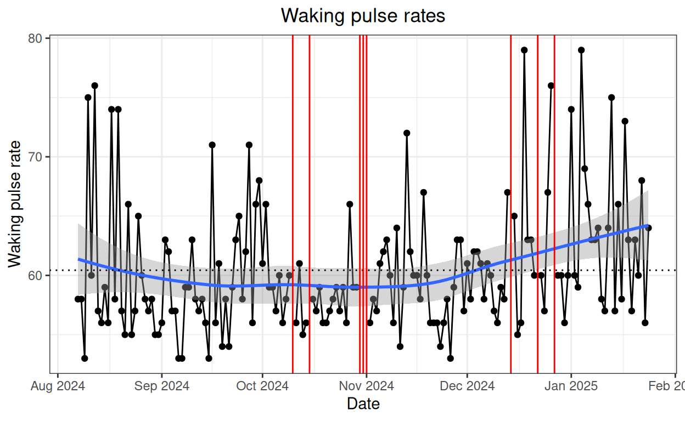
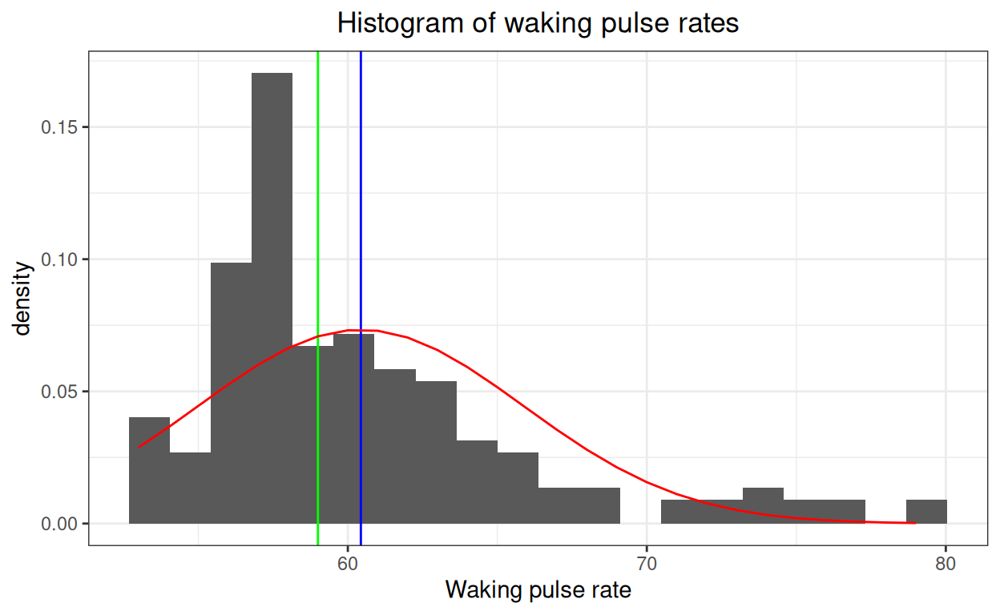
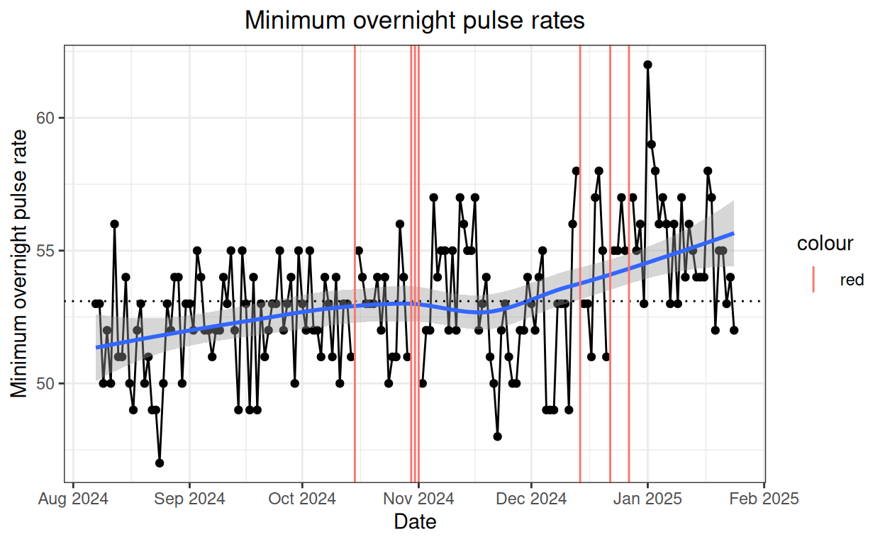
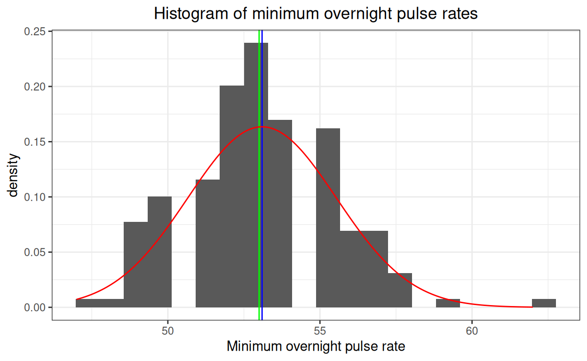
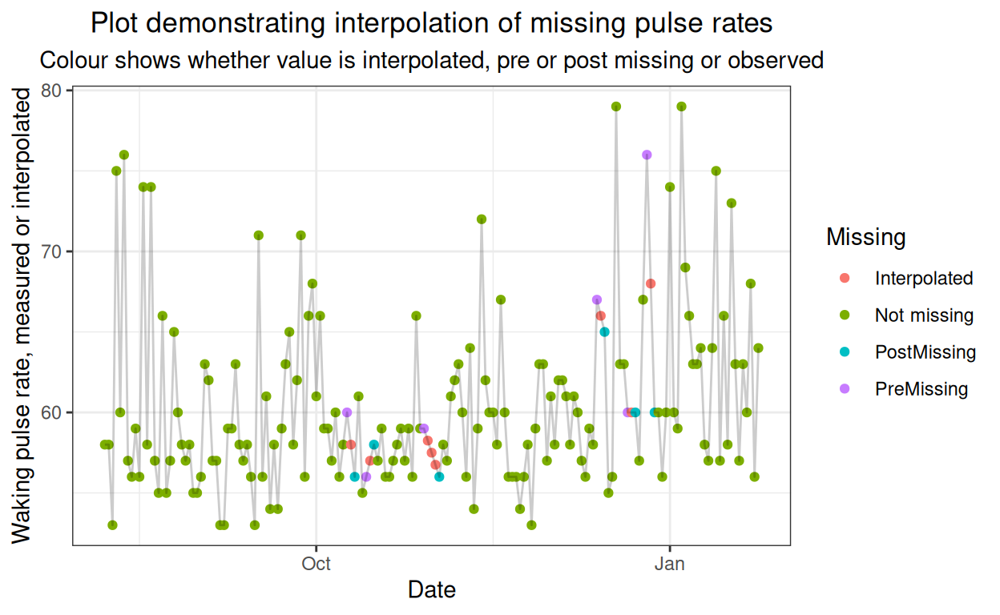
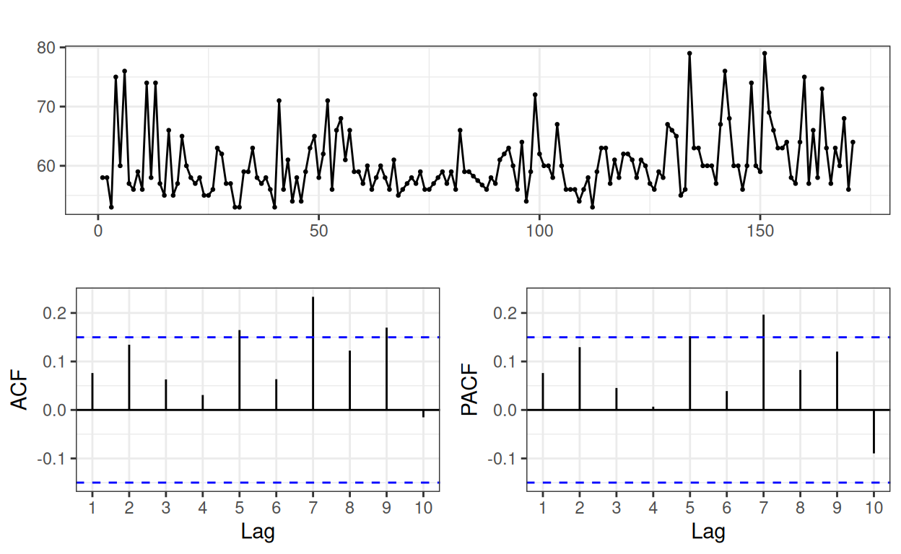
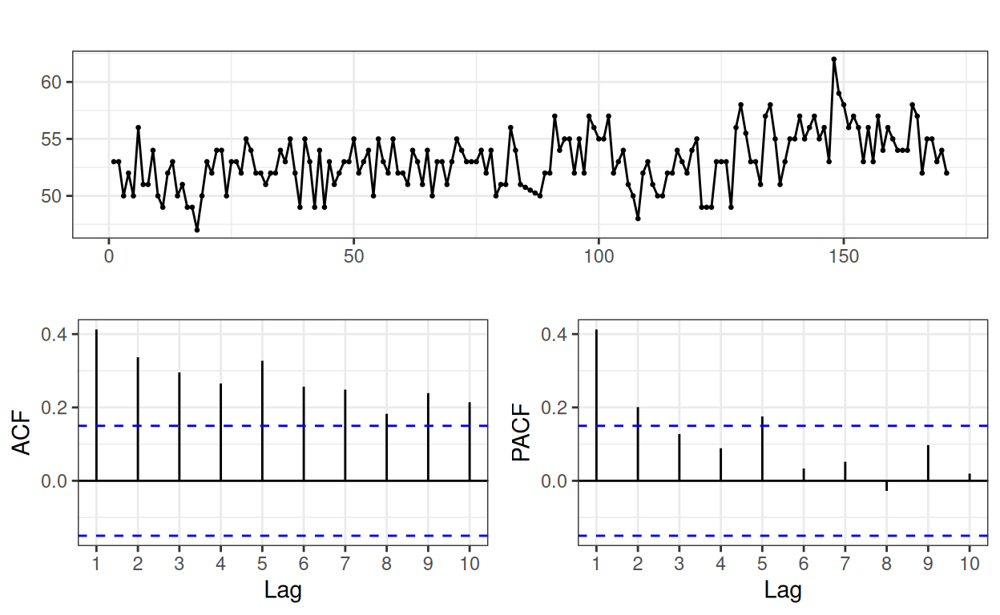

Started 14.i.25
I did this largely to give a worked example to complement a very short entry in the glossary of the OMbook: here. If autocorrelation is completely new to you it’s probably worth looking at that short glossary entry before reading on here.
Show code
### this is just the code that creates the "copy to clipboard" function in the code blocks
htmltools::tagList(
xaringanExtra::use_clipboard(
button_text = "<i class=\"fa fa-clone fa-2x\" style=\"color: #301e64\"></i>",
success_text = "<i class=\"fa fa-check fa-2x\" style=\"color: #90BE6D\"></i>",
error_text = "<i class=\"fa fa-times fa-2x\" style=\"color: #F94144\"></i>"
),
rmarkdown::html_dependency_font_awesome()
)Show code
if (interactive()) {
read_csv("./_posts/2025-01-24-autocorrelation1/autocorrelation.csv") -> tibDat
} else {
read_csv("autocorrelation.csv") -> tibDat
}
### now get the first and last dates with usable pulse rates
tibDat %>%
filter(!is.na(minPR)) %>%
summarise(first = min(Date),
last = max(Date)) -> tmpTib
### and filter to within those dates
tibDat %>%
filter(Date >= tmpTib$first & Date <= tmpTib$last) %>%
mutate(dayN = row_number()) -> tibDatI’m illustrating autocorrelation from a short dataset I created for my own amusement after buying a cheap watch that would tell me my waking and lowest overnight pulse rates. The data I’m using run from 07/08/24 to 24/01/25. Here are the simple descriptive statistics.
Show code
### get summary statistics
tibDat %>%
summarise(first = min(Date),
last = max(Date),
n = n(),
PRnNA = getNNA(PulseRate),
PRnOK = n - PRnNA,
PRmin = min(PulseRate, na.rm = TRUE),
PRmean = mean(PulseRate, na.rm = TRUE),
PRmedian = median(PulseRate, na.rm = TRUE),
PRmax = max(PulseRate, na.rm = TRUE),
PRsd = sd(PulseRate, na.rm = TRUE),
minPRnNA = getNNA(minPR),
minPRnOK = n - minPRnNA,
minPRmin = min(minPR, na.rm = TRUE),
minPRmean = mean(minPR, na.rm = TRUE),
minPRmedian = median(minPR, na.rm = TRUE),
minPRmax = max(minPR, na.rm = TRUE),
minPRsd = sd(minPR, na.rm = TRUE)) -> tibStats
tibStats %>%
select(-c(first, last)) %>%
pivot_longer(cols = everything(),
names_to = "Statistic") %>%
### create grouping
mutate(whichPR = if_else(str_detect(Statistic, fixed("minPR")),
"Min overnight PR",
"Waking PR"),
whichPR = if_else(Statistic == "n",
"Overall",
whichPR)) %>%
as_grouped_data(groups = "whichPR") %>%
flextable() %>%
colformat_double(digits = 2) %>%
autofit()whichPR | Statistic | value |
|---|---|---|
Overall | ||
n | 171.00 | |
Waking PR | ||
PRnNA | 8.00 | |
PRnOK | 163.00 | |
PRmin | 53.00 | |
PRmean | 60.44 | |
PRmedian | 59.00 | |
PRmax | 79.00 | |
PRsd | 5.44 | |
Min overnight PR | ||
minPRnNA | 7.00 | |
minPRnOK | 164.00 | |
minPRmin | 47.00 | |
minPRmean | 53.10 | |
minPRmedian | 53.00 | |
minPRmax | 62.00 | |
minPRsd | 2.44 |
This plot shows the waking pulse values.
Show code
ggplot(data = tibDat,
aes(x = Date, y = PulseRate)) +
geom_point() +
geom_line() +
geom_smooth() +
geom_hline(yintercept = tibStats$PRmean,
linetype = 3) +
geom_linerange(data = filter(tibDat,
is.na(PulseRate)),
aes(x = Date,
ymin = -Inf,
ymax = Inf),
colour = "red") +
ylab("Waking pulse rate") +
scale_x_date(date_breaks = "1 month", date_labels = "%b %Y") +
ggtitle("Waking pulse rates")
The red lines mark days when for some reason I don’t have a value for my waking pulse, the black points are do the values where I have them (doh!) and the blue line is the “loess†smoothed curve fitting the data and the shaded area around that is its 95% confidence interval. The dashed horizontal line is the arithmetic mean of the values. We can see that the data are right skew. This histogram of the values shows that more clearly.
Show code
tibble(x = seq(tibStats$PRmin, tibStats$PRmax, 1)) %>%
mutate(y = dnorm(x, mean = tibStats$PRmean, sd = tibStats$PRsd)) -> tibNormFitPR
ggplot(data = tibDat,
aes(x = PulseRate)) +
geom_histogram(aes(x = PulseRate,
after_stat(density)),
bins = 20) +
geom_vline(xintercept = tibStats$PRmean,
colour = "blue") +
geom_vline(xintercept = tibStats$PRmedian,
colour = "green") +
geom_line(data = tibNormFitPR,
aes(x = x, y = y),
colour = "red") +
xlab("Waking pulse rate") +
ggtitle("Histogram of waking pulse rates")
The blue line marks the mean value and the green line the median, the red curve is the best fitting Gaussian distribution. It’s easy to see that the data are markedly right skew and not Gaussian!
Show code
ggplot(data = tibDat,
aes(x = Date, y = minPR)) +
geom_point() +
geom_line() +
geom_smooth() +
geom_hline(yintercept = tibStats$minPRmean,
linetype = 3) +
geom_linerange(data = filter(tibDat,
is.na(minPR)),
aes(x = Date,
ymin = -Inf,
ymax = Inf,
colour = "red")) +
ylab("Minimum overnight pulse rate") +
scale_x_date(date_breaks = "1 month", date_labels = "%b %Y") +
ggtitle("Minimum overnight pulse rates")
Here’s the histogram for those values.
Show code
tibble(x = seq(tibStats$minPRmin, tibStats$minPRmax, .1)) %>%
mutate(y = dnorm(x, mean = tibStats$minPRmean, sd = tibStats$minPRsd)) -> tibNormFitPR
ggplot(data = tibDat,
aes(x = minPR)) +
geom_histogram(aes(x = minPR,
after_stat(density)),
bins = 20) +
geom_vline(xintercept = tibStats$minPRmean,
colour = "blue") +
geom_vline(xintercept = tibStats$minPRmedian,
colour = "green") +
geom_line(data = tibNormFitPR,
aes(x = x, y = y),
colour = "red") +
xlab("Minimum overnight pulse rate") +
ggtitle("Histogram of minimum overnight pulse rates")
Clearly on the data we have these data are not a bad fit to a Gaussian distribution. I wonder if that’s because the minimum is pretty fixed but varying, perhaps fairly randomly, day by day whereas the waking rate is going to be a function of my point in the sleep cycle when the alarm goes off and hence can be quite high but also down near the minimum. Probably showing how little I know about sleep!
Autocorrelation
OK, now we have a sense of the data and we can look at the autocorrelation.
Interpolation
However, as we have missing values we have no choice but to interpolate replacement values and the only sensible way to do this, to my mind, is linear interpolation. Linear interpolation is applied for each run of missing values. In linear interpolation the replacement value is the mean of the values either side of it if there is only one missing value, if there are two the first is replaced with the value that is one third of the sum of the values either side and the second is replaced with the value two thirds of the sum of the values either side. However many values are missing they are being replaced with values lying along a straight line from the non-missing value before the first missing value and and the value after the last missing value in that block of missing values.
This shows the interpolation of the waking pulse rates across the entire dataset.
Show code
### do the interpolation across all data
x <- zoo(tibDat$PulseRate, tibDat$dayN)
x <- as.ts(x, start = 1, frequency = 1)
xInterpolated <- na.interp(x)
### get that to a tibble and create dayN
tibble(interpolatedPR = as.numeric(xInterpolated)) %>%
mutate(dayN = row_number()) -> tmpTib
tibDat %>%
select(Date, dayN, PulseRate, PulseNA, minPR) %>%
mutate(n = n(),
Missing = if_else(!PulseNA, "Not missing", "Interpolated"),
### now identify the pre-missing
Missing = if_else((row_number() != n & # not the last observation
!is.na(PulseRate) &
is.na(lead(PulseRate))),
"PreMissing",
Missing),
### I know that the dataset starts with a non-missing value so this is safe
Missing = if_else(row_number() > 1 & # not the first observation
!is.na(PulseRate) &
is.na(lag(PulseRate)),
"PostMissing",
Missing)) -> tibDat
### merge in the interpolated values
tibDat %>%
left_join(tmpTib, by = "dayN") -> tmpTib
ggplot(data = tmpTib,
aes(x = Date, y = interpolatedPR)) +
# geom_point(aes(y = interpolatedPR,
# colour = Missing),
# shape = "+",
# size = 3) +
geom_point(aes(colour = Missing)) +
geom_line(alpha = .2) +
ylab("Waking pulse rate, measured or interpolated") +
ggtitle("Plot demonstrating interpolation of missing pulse rates",
subtitle = "Colour shows whether value is interpolated, pre or post missing or observed")
OK, now we have complete, if repaired, data we can look at the ACF.
Waking pulse rate
I have used the ggtsdisplay() function out of the forecast package to get this plot.
Show code
acf(xInterpolated, plot = FALSE, lag.max = 10)$acf -> vecACFwaking # numbers off 1 to 11 with #1 always 1.0
pacf(xInterpolated, plot = FALSE, lag.max = 10)$acf -> vecPACFwaking # numbers off 1 to 10, i.e. starting with lag 2
ggtsdisplay(xInterpolated, lag.max = 10)
The top plot is just the interpolation repaired waking pulse data but the x axis is the day count not the actual date. (I’m being lazy and haven’t explored whether I could get that back to labelling by date, I suspect it would be tricky). The crucial plots are the two below that. Their y axes are correlation values and the blue dashed lines use some statistical theory to show the values above or below which we might regard them as statistically significant with p < .05. The x axes are the lag values so they start at 1 for the simple lag 1. Because there is a multiple tests issues here, oversimplifying a very little, lags above 2 that look to be statistically significant, i.e. they are outside those blue dashed bounds are highly unlikely to be meaningful. Hm, having said that, there are seven days in a week so if there is some weekly rhythm to my waking pulse, which seems just about plausible, perhaps that one is meaningful with its correlation of 0.23.
Interesting! So that is saying that across the 171 days in the data, i.e. the 24 weeks and 3 and three days there does seem to be a positive correlation between my waking pulse rates from week to the next week.
So that’s the ACF, what’s the PACF? This is the partial ACF and it’s the correlation after partialling out all of the the earlier lags. Interesting that the seventh partial correlation is above the criterion (it’s 0.20).
Minimum overnight pulse rate
Here is the same for the minimum overnight pulse rates.
Show code
### do the interpolation across all data
x <- zoo(tibDat$minPR, tibDat$dayN)
x <- as.ts(x, start = 1, frequency = 1)
xInterpolated <- na.interp(x)
acf(xInterpolated, plot = FALSE, lag.max = 10)$acf -> vecACFminPR # numbers off 1 to 11 with #1 always 1.0
pacf(xInterpolated, plot = FALSE, lag.max = 10)$acf -> vecPACFminPR # numbers off 1 to 10, i.e. starting with lag 2
ggtsdisplay(xInterpolated, lag.max=10)
That shows a rather different picture from that for the waking pulse rates. All the simple ACF correlations up to lag 10 look to be statistically significant and the lag 1 ACF correlation is 0.41 which is pretty high. Partialing lag 1 out still leaves the PACF for lag 2 significant at 0.20. There’s a similar PACF correlation for lag 5: 0.18 but I can’t see much reason to regard that as other than a sampling vagary.
Summary
I hope this has illustrated the ACF and PACF functions. I’ve shown them as correlations but sometimes it makes sense to report covariances (hence my pedantic “ACF correlation†not just “ACF†though I think that is sometimes used as a shorthand). I think I should do an update in a year’s time when there will be more data!
web counter